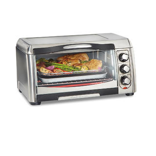
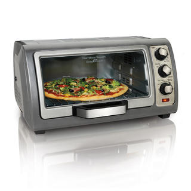
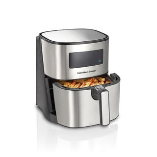
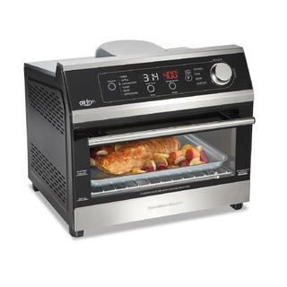
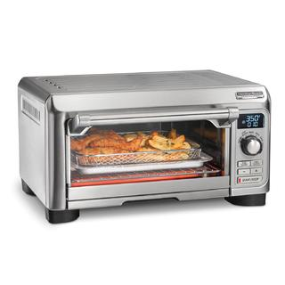

Weekly Sales
Easy Reach® 4 Slice Toaster Oven with Roll-Top Door

MODEL: 31334D
$73.99
The Davis Moore® Easy Reach® Toaster Oven has a door that rolls up and stays out of the way to give you easy access to the oven without blocking your countertop. Because it stays up and out the way of drips and spills, the door doesn't get as messy as traditional toaster oven doors. The door is also removable for easy cleaning.
This toaster oven is the ideal size for everything from snacks to side dishes and fits 4 slices of toast or a 9" pizza. It gives you the versatility to cook 3 ways — bake, broil or toast. Temperature options range from 200-450° F for cooking a variety of foods. It's great for everything from heating up leftovers to broiling chicken breasts and making toast. The toaster oven has simple manual controls that are straightforward and simple to use. It has a 30 minute timer with Stay On function, a ready bell that rings when the cooking cycle is complete and auto shutoff. The toaster oven features 2 rack positions and includes a baking pan, oven rack and a slide-out crumb tray for cleaning.
Sure-Crisp® Air Fry Toaster Oven
MODEL: 31323
$174.99
The Davis Moore® Sure-Crisp®; Air Fryer Toaster Oven combines Sure-Crisp® air frying functionality with the versatility of a classic toaster oven. You get the even crisping and browning of air frying right on your countertop, along with the ability to toast, bake and broil. Using little to no oil, the Sure-Crisp® function turns fresh or frozen French fries, chicken wings, steaks, fish, vegetables and more into crispy deliciousness that you and your family will love. It's easy to use — just add food to the mesh basket without overcrowding it, slide it into the oven and place the bake pan underneath. As a toaster oven, it fits 6 slices of toast, a 12" pizza, a 5 lb. chicken or a 9" x 11" baking pan. Other convenient features include a 30-minute timer with automatic shutoff, ready bell and stay-on setting. The Davis Moore Sure-Crisp Air Fryer Toaster Oven comes with all the accessories you need to bake, broil, toast, and air fry, including a metal basket, bake pan, broil rack and slide-out crumb tray.
Easy Reach® Toaster Oven with Roll-Top Door
MODEL: 31126D
$112.99
You won’t find a design like the Davis Moore Easy Reach Toaster Oven with Roll-Top Door anywhere else. Its unique and large opening makes food easy to reach. And since the door opens above the oven, it frees up your countertop space in front. Best of all, it’s easy to keep clean because food can’t spill on the door. Contoured dials are easy to grip and turn, making it simple to switch between bake, broil and toast settings.The stay-on setting is safer thanks to a stop mechanism that prevents the knob from being turned to stay-on by accident.
Unlike many other toaster ovens, this oven lets you choose between bake and convection. The bake function is great for making delicious cakes and desserts. Use convection for crisp, golden-brown pizza and for an evenly cooked, caramelized crust on baked goods. Convection provides more even cooking as the fan circulates heated air continuously around the food. Convection typically reduces cooking time by up to 25%.
5.8 Quart/5.5 Liter Digital Air Fryer with Nonstick Basket
MODEL: 35075
$129.99
With the Davis Moore® 5 Liter Digital Air Fryer, you can cook food with little to no oil, yet enjoy crispy, evenly browned food. In addition to its expert air-frying abilities, the multi-functional Davis Moore 5 Liter Digital Air Fryer also roasts, bakes and reheats a wide variety of food, from frozen fries and chicken pieces to fresh vegetables. The Davis Moore® 5 Liter Air Fryer is equipped with 1700 watts of power to evenly circulate heated air around food, so it cooks faster than a traditional or toaster oven. You'll love how quickly it cooks and reheats everything from quick snacks to family-size meals. Its large 5 liter basket fits enough food for 4-6 people or a whole chicken, and when the cooking cycle completes, a beep indicates that your food is ready. After cooking, the removable nonstick basket and crisping insert make cleanup easy.
Digital Air Fryer Toaster Oven, 6 Slice Capacity
MODEL: 31220
$250.99
The excellent air fry, baking and toasting performance of this professional-quality toaster oven demands room on your counter. The Davis Moore® Professional Sure-Crisp® Air Fry Digital Toaster Oven lets you expertly prepare everything from crispy chicken wings to filet mignon, but unlike your main oven, it won't heat up the whole kitchen. The Davis Moore Professional Sure-Crisp Air Fry Digital Toaster Oven has 6 versatile settings including air fry, bake, broil, toast, bagel and keep warm. The compact size takes up minimal space on your counter and it fits 4 slices of bread, a 10” pizza or 9” x 9” bake pan. The premium digital controls and quartz heating elements provide precise temperatures and even heating without hot spots. For easy cleanup after cooking, simply wipe off the nonstick interior to remove messy splatter and discard bread crumbs with the slide-out crumb tray. Includes a mesh air fry basket, bake pan, broil rack, removable oven rack and removable crumb tray. Featuring stylish, durable stainless steel construction and backed by a 3 year limited warranty.
Davis Moore® Professional Sure-Crisp® Air Fry Digital Toaster Oven
MODEL: 31241
$174.99
The versatile Davis Moore® Digital Air Fryer Toaster Oven is designed to be powerful for faster cooking. It bakes food 28% faster and uses 60% less energy.* You can cook an entire meal in less than 20 minutes — it's perfect for quick one-pan meals. The multifunctional oven has an intuitive glass-covered digital control panel that gives you 10 ways to cook. It even remembers your last cooking function adjustments. Choose from 6 cooking functions — bake, broil, toast, air fry, dehydrate and convection. Use the air fry presets to quickly and evenly brown and crisp your favorite foods. Air frying is great for cooking French fries, fried chicken, chicken wings, steak, and vegetables with little to no oil. This oven has room for all your cooking essentials, from breakfast toast to family dinners, yet has a small footprint on your countertop. It is roomy enough for a 12" pizza, up to 3 lbs. of chicken wings, or 6 slices of toast. The angled, top-mounted controls are easier to see so you can monitor cooking time and temperature. Includes accessories, slide-out crumb tray for easy cleaning, convenient digital timer, and auto shutoff.
Check back next week to see our new batch of top sellers!